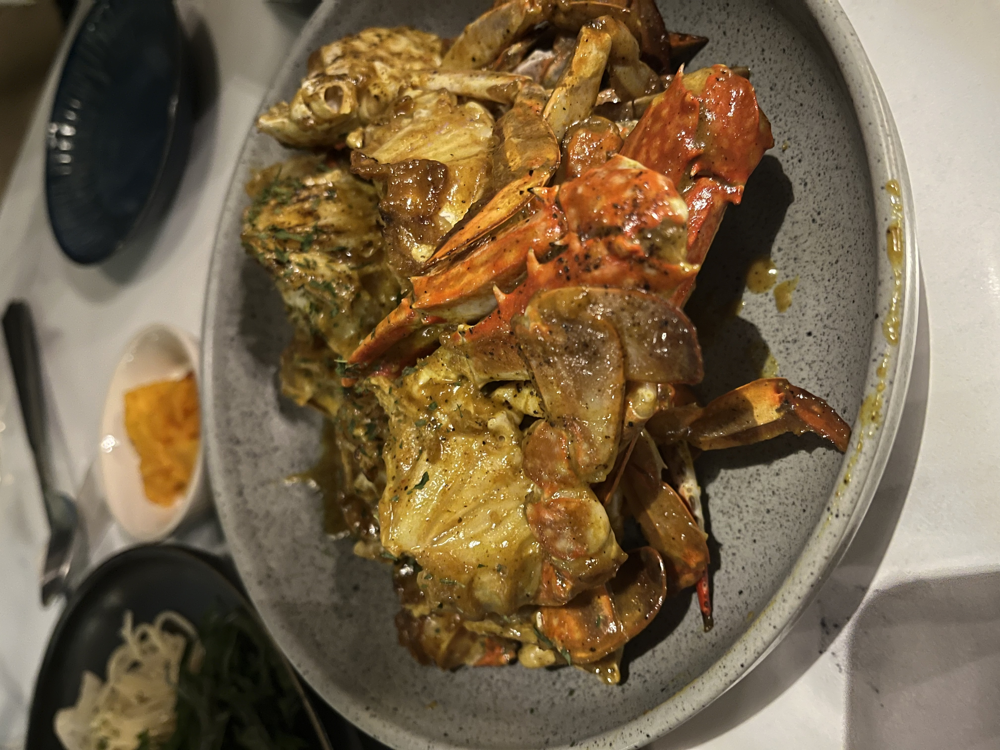
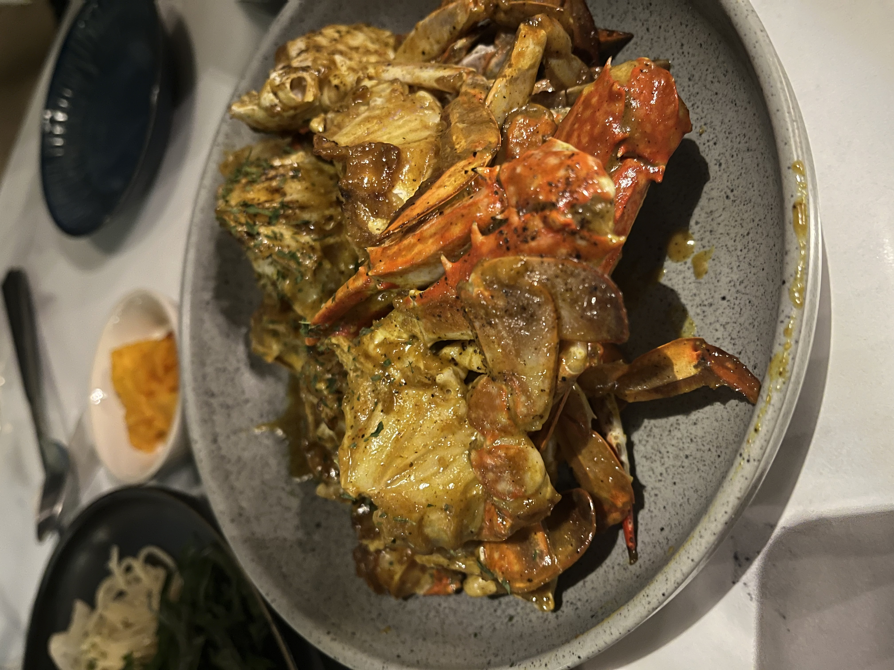
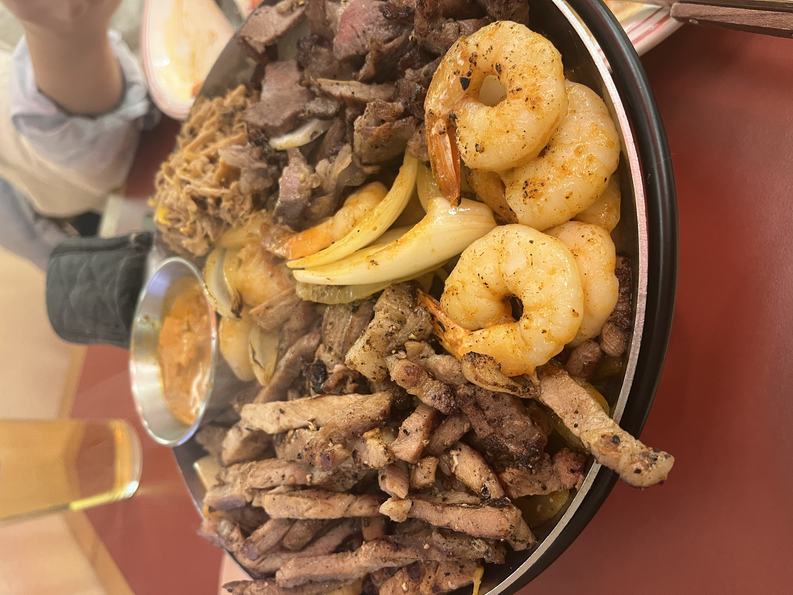
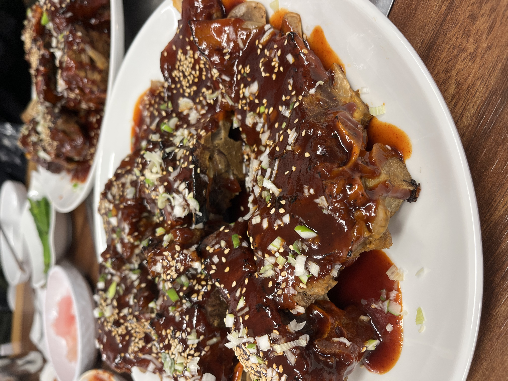
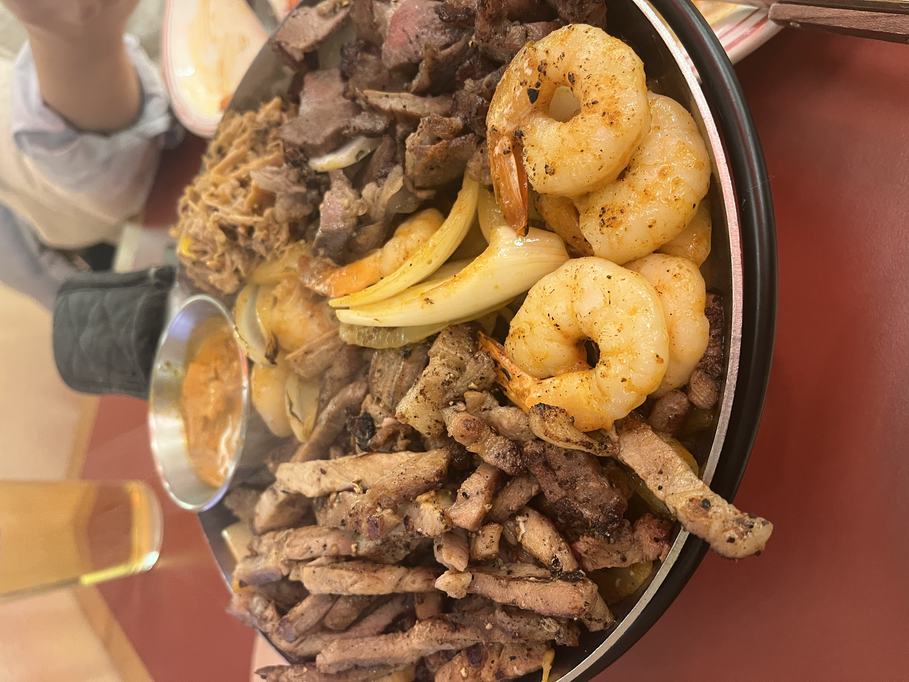
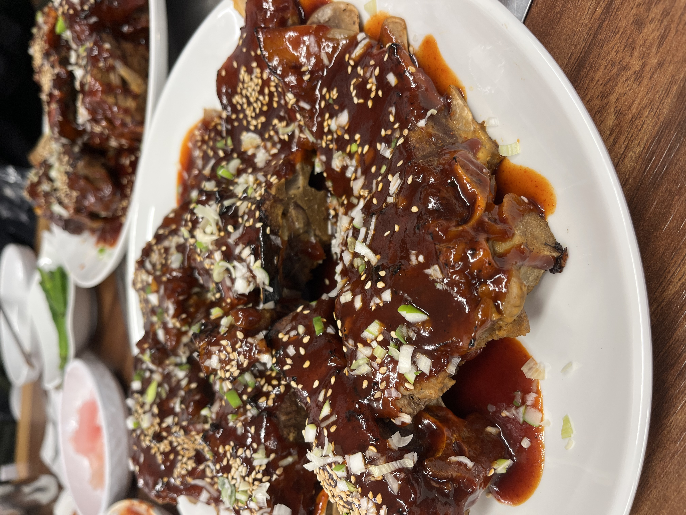

 



인생 영화 : 국제시장

한국전쟁 전후의 상황을 보여주는 영화입니다. 천만 영화 답게 아마 다들 잘 아실 것이라 생각합니다.
저는 이 영화가 개봉했을 때에는 보지 않았고, 고등학생 무렵 이 영화를 처음 보게 되었습니다.
제가 영화를 봐도 잘 우는 성격이 아닌데 이 영화를 보고 처음으로 눈물을 글썽였습니다. 특히 마지막 부분에 이산가족 상봉하는 부분에서는 작중 캐릭터의 감정에 몰입하여 오열할 뻔 했는데 겨우 참았던 기억이 있습니다.